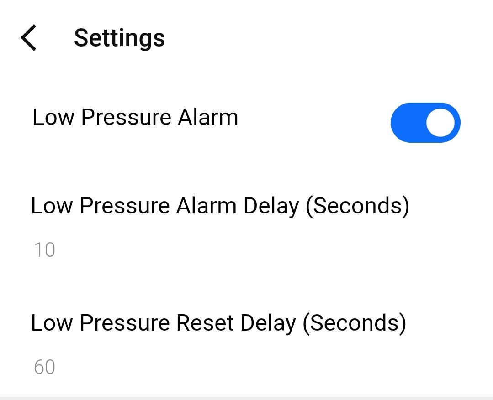
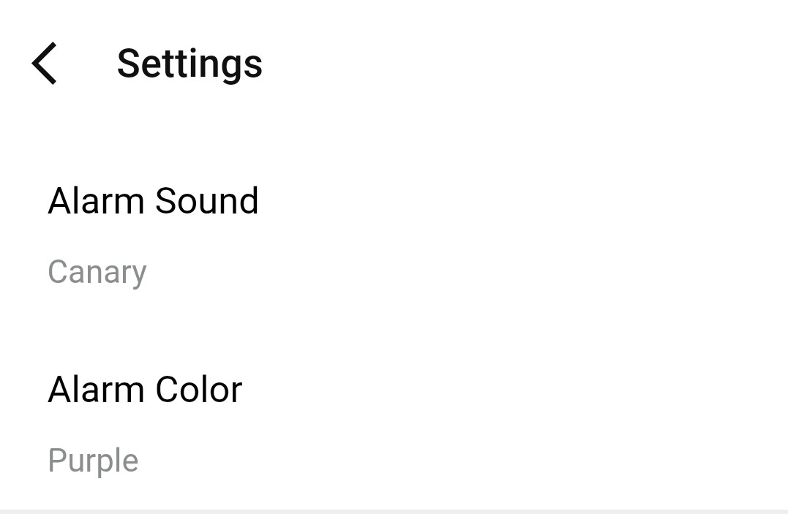

Road
Shorter delay, faster reset
Road pressure is usually more stable, but temperature swings can still move the baseline enough to matter. Shorter alert timing usually stays responsive without much noise.
Pressure warning system
TubeWitch can show popup alerts, play tones, and trigger watch vibration. The real value is not just that alerts exist, but that the delay and reset behavior can be tuned so warnings feel useful instead of noisy.
TubeWitch can keep watch in the background, so you can leave your map or preferred screen up and still get popup and audible alerts.

Exact numbers depend on pressure target, ambient temperature, and terrain, but the pattern below is a sensible starting point.
Road
Road pressure is usually more stable, but temperature swings can still move the baseline enough to matter. Shorter alert timing usually stays responsive without much noise.
Gravel
Mixed surfaces create more transient pressure changes, while temperature still shifts the baseline pressure. Slightly longer timing helps avoid repetitive alerts.
MTB or rough terrain
Rough terrain creates more momentary variation, and heat can stack on top of that during a ride. Calmer timing helps reserve alerts for changes that are real and sustained.
Alert timing controls are designed to catch real pressure events while reducing repeat noise.
Choose how long pressure must stay high or low before a warning triggers.
Set how long pressure stays back in range before that alert state fully clears.
Select popup, tone, color, and vibration behavior for each device type and riding context.


| Marker | Meaning | Typical next action |
|---|---|---|
| L / H | Pressure is below or above the configured sensor target | Adjust pressure or inspect for leak and temperature effects |
| ? | Data is stale and TubeWitch is trying to reconnect | Keep riding and watch whether reconnect succeeds quickly |
| X | Sensor timeout was reached during activity | Use touch rescan or the stop and resume activity rescan path |
The Settings page includes the full list of alert, timeout, display, and recording options available in TubeWitch.